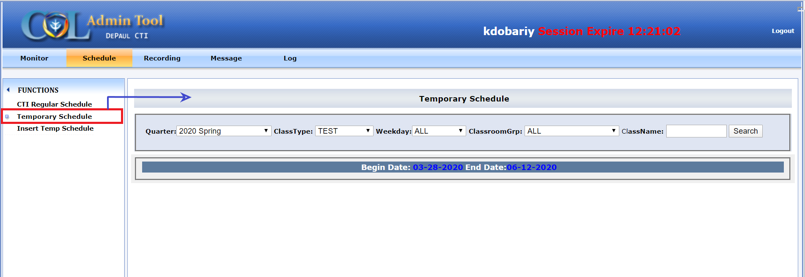

Displays all the recordings that have been entered as standalone or
ad-hoc recordings, i.e. those recordings that are not part of a
recurring schedule. These are referred to as Temp/Temporary Schedules.
The Temp schedules that have been entered and have been pushed to the
PPC schedule as well as the newly entered ones that have not been pushed
yet, both appear in this list.
Same as the CTI schedule function, here too the schedules can be
searched using filters.

Search Bar
The inserted temp schedules can be searched here using filters. Below
search bar, the current quarter’s Begin & End dates are displayed.
-
► Quarter: Search by
Quarter. Default value is Current quarter
-
► Class Type: Search by
Class Type. TEST, SEMINAR or CTI.
-
TEST: These are recordings
internal to the RA website and only accessible to authorized RA
users. The COL staff uses the TEST group when carrying out daily
maintenance recordings.
-
SEMINAR: These are
non-encrypted recordings. Once they upload, their playback link can
be retrieved from the RA website and provided to the requestor.
Since these are not encrypted, they can be universally distributed
and played by anyone.
-
CTI: These are regular CDM
lecture recordings. They are encrypted by course and become
automatically available to students and instructor of that course
immediately after uploading to the server.
-
► Weekday: Classes can
be searched using a particular day of the week. Default = ALL.
-
► ClassroomGrp: Search
by RA classroom group. Default = ALL.
-
► Class Name: Classes
can be searched by Keyword or ClassName with ID.
-
“Test Course in CDM 214”
returns all recordings where the recording name contains that
phrase.